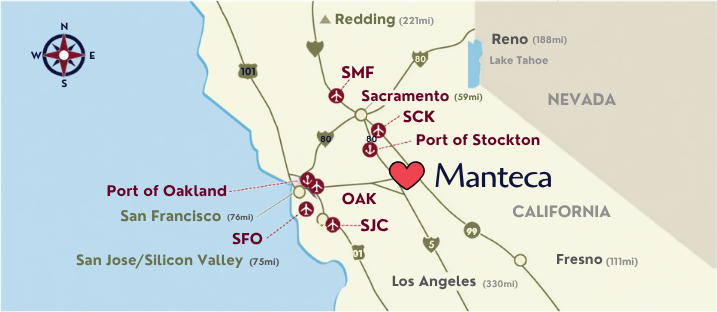
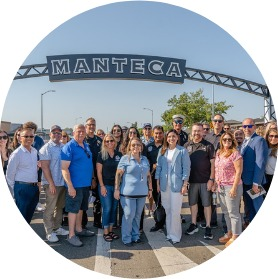
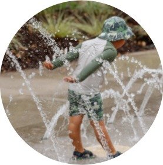
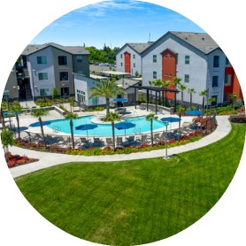
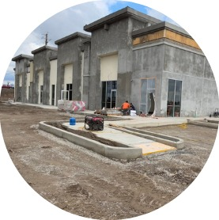
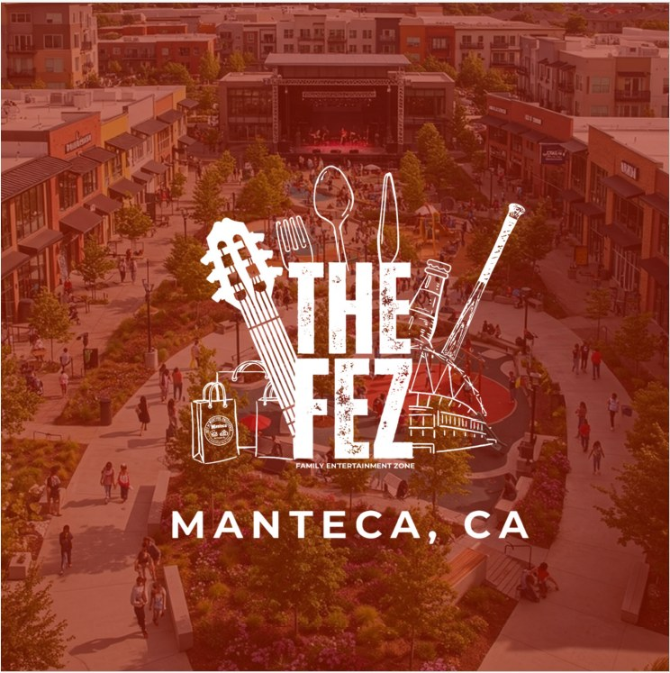

Make it Your next Move. Make It Manteca.
Whether you're starting a business, expanding, relocating, or investing, our Economic Development team is here to help turn your next opportunity into reality. You've found Manteca. Now let us help you make it here.
Manteca: Growing, Connected,
and Full of Opportunity
As one of California's fastest-growing cities, Manteca is quickly approaching 100,000 residents and continues to attract new families, businesses, investment, and development.
Location is one of Manteca's greatest advantages. Positioned along Highway 120 between Interstate 5 and Highway 99, businesses have direct access to some of California's most important transportation corridors and a regional customer base that extends well beyond city limits.

Manteca residents are looking for more places to shop, dine, gather, play, and spend time. Our growing population includes families and residents relocating from larger markets who are bringing demand for greater variety—from specialty grocery and dining to entertainment, experiences, and brands that are new to the community.
Manteca is a regional destination. Attractions such as Great Wolf Lodge, Big League Dreams, Bass Pro Shops, and a growing collection of sports, entertainment, retail, and hospitality uses bring visitors from throughout the region, expanding the market beyond our resident population.
And we're not waiting for opportunity to find us. We're actively building relationships, promoting development opportunities, and pursuing the businesses, amenities, and investment our community wants.
Momentum You Can See
Make It Manteca
FEZ Video
M1 Video
Downtown Specific Plan Video
Our Community

Population 98,000
527 ActivePark Acres

6th Fastestgrowing city in CA

Located near 4international airports
According to the Bureau of Economic Analysis, San Joaquin County has the 2nd highest concentration of transportation and logistics jobs in the nation. Manteca's close proximity to colleges and universities, major international and domestic air services, rail, and shipping ports delivers the strategic advantage growing businesses need.
Manteca is in the heart of California.
Located along HWY 120 between Interstate 5 and HWY 99. Situated approximately 75 miles east of San Francisco and 60 miles south of Sacramento.
Located near 3 Colleges/Universities within 30 miles.
Employers are striking talent gold in San Joaquin County due to the proximity of area institutions for higher education. Regional colleges and universities are providing a pipeline of future workers through valuable learning and training opportunities for students while helping regional employers access a skilled and educated workforce.
Gaining new residents with attractive housing options.
Known as the “Family City,” Manteca offers an abundant variety of more affordable housing choices than the Bay Area. We are a City experiencing fast growth with more than 11,000 entitled lots in various stages of processing.
Join Our Current Corporations



The Family Entertainment Zone
The Family Entertainment Zone (FEZ) is Manteca's visionary development project designed to create a premier destination for residents and visitors alike.
A New Entertainment Paradigm
FEZ Manteca represents a new approach to entertainment destinations, one that seamlessly blends retail, dining, and entertainment into a cohesive experience. Our concept focuses on creating a place where families can spend quality time together, where friends can gather for memorable experiences, and where the community can come together for events and celebrations.
By combining diverse attractions under one development, FEZ will create synergies that benefit all tenants and provide visitors with multiple reasons to visit again and again.
- Year-round destination appeal
- Multi-generational attractions
- Regional draw from surrounding communities
A Comprehensive Entertainment Destination
FEZ Manteca represents a unique opportunity to develop a mixed-use entertainment district that will serve as a regional draw for the Central Valley. Our vision combines world-class shopping, diverse dining options, family-friendly entertainment venues, state-of-the-art sports facilities, and vibrant live entertainment spaces.
Located strategically in Manteca, California, the FEZ will capitalize on the city's growing population and strategic position between major metropolitan areas, creating an unparalleled destination for both locals and tourists.
Prime Location
Strategically positioned for maximum visibility and accessibility.
Investment Opportunity
FEZ Manteca represents a unique opportunity for developers and investors to be part of a transformative project with significant growth potential.
Why invest in the FEZ in Manteca?
Strategic Location
Located in one of California's fastest-growing regions with excellent accessibility and visibility.
Strong Market Demand
Addressing an underserved market with significant pent-up demand for quality entertainment options.
Resources
How to Start a Business
City Business Resources
- Economic Development: Visit Manteca's Economic Development page.
- Business Portal: See which permits you need for your business.
- Business Licenses: Get information on new licenses or renewals.
- Apply for a License: Find out how to apply and get the next steps.
- Business FAQ: Get answers to frequently asked questions.
Small Business Resources
Financial Assistance
- Emergency Loan from SBA: The Small Business Administration has a list of resources providing financial assistance to businesses of all sizes, non-profit organizations, homeowners and renters following disasters.
- Small Business Assistance Grants: The City of Manteca periodically provides grants to local small businesses for improvements.
Business Assistance
- San Joaquin SBDC: The San Joaquin Small Business Development Center offers startup assistance, advising, funding, training, and industry information for small businesses in the county.
- Manteca Chamber of Commerce: The Chamber's role is to protect, improve, and promote local businesses. They provide businesses with friendships, professional and social development, and networking opportunities.
- Manteca Education and Training Center (METC): The METC offers a variety of skills training and career path development courses. Teaching both soft skills and technical skills, they offer ways for business owners to upskill their workforces.
City Incentive Programs
These programs are informational — an inquiry is not an application. Participation is highly selective and by invitation. Connect with our team to find out what's right for your project.
Startup Manteca Incentive Program
Technical and financial assistance for launching and scaling startups, and for co-working or incubator facilities that support them, across most tech verticals — AgTech, AI/ML, BioTech, Blockchain/Web3, CleanTech, and more.
BReW Program
Financial support for target industry businesses covering the development, improvement, or expansion of breweries, restaurants, and wineries in Manteca.
FIXD Program
The Façade Improvement through Exceptional Design program provides grant funding and professional design services for exterior building improvements — paint, lighting, awnings, signage, and more. Highly selective, invitation-only.
Retail & Hospitality
Targeted tax rebate incentives for businesses and projects that generate significant new sales and occupancy taxes, and raise the bar on lifestyle amenity quality and quantity.
Site-selection consultants: download our Site Selector Overview (PDF).
Meet the Team

Vanessa Carrera
Deputy Director of
Economic Development
Toni Lundgren
City Manager

Joseph Viorge-Koide
Senior Economic
Development Analyst
Contact Us
Tell us about your project and we'll get you the sites, numbers, and approvals path you need. Every inquiry reaches our team directly.
Deputy Director, Economic Development
City of Manteca — City Manager's Office
Manteca, CA 95337